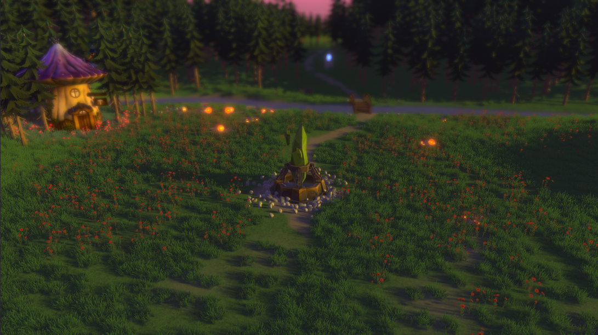
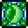

Magical Forest
Magical Forest
A Magical Forest egy lenyűgöző pálya az játékban, ahol a játékosoknak meg kell védeniük ezt a varázslatos erdőt a gonosz erők támadásaitól.
Ez a pálya egy varázslatos hely, ahol a valóság határai elmosódnak, és a természet varázslatos ereje uralkodik. Amint belépsz, egy izgalmas és csodálatos világba lépsz, ahol minden fa titkokat őriz, minden folyó meséket suttog.
Ahogy a játék halad előre, újabb és erősebb ellenfelek törnek majd elő az erdő mélyéről, kihívást adva a játékosoknak, hogy folyamatosan finomítsák stratégiáikat és fejlesszék a tornyukat a lehetőségek tárházából.
Az erdő mélyén titokzatos ősi ereklyék és varázslatos erőforrások rejtőznek, ezáltal a játékosra egy gyengítés kerül minden olyan hullámban amikor a  főellenség életben van. (Lásd a táblázatban)
főellenség életben van. (Lásd a táblázatban)
Magical Forest
Pályához tartozó effekt:
Mystical Garden:
Amíg a  főellenség életben van az
főellenség életben van az  alap, és
alap, és  gyors ellenségek egyfajta áldást kapnak, ami 1,5x-es
gyors ellenségek egyfajta áldást kapnak, ami 1,5x-es  támadóérték, és
támadóérték, és  életerő növekedést jelent.
életerő növekedést jelent.